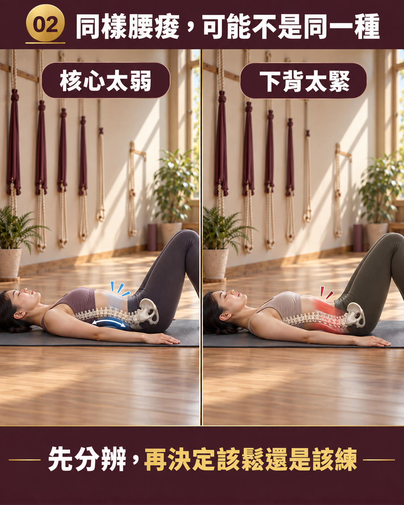
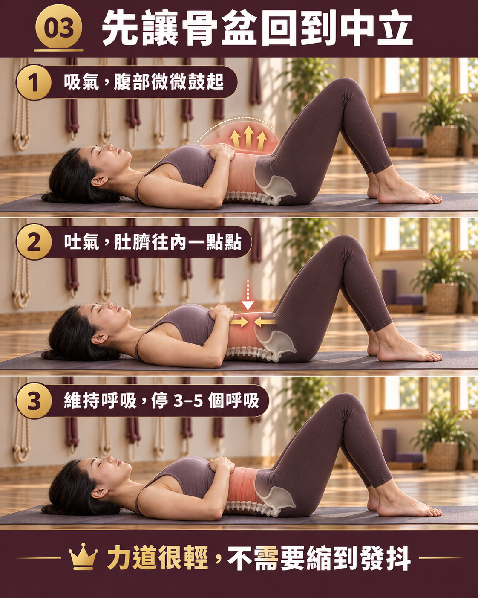

腰痠是核心太弱還是下背太緊？先看懂骨盆中立與深層核心的支撐關係
- 久坐久站後的腰痠，往往不是「單純太弱」或「單純太緊」，而是深層核心低活化與下背豎脊肌過度代償的共同結果。
- 深層核心（腹橫肌、多裂肌、骨盆底肌）如同天然束腹；若缺乏協同支撐，下背豎脊肌便得被迫整天硬撐。
- 盲目猛做仰臥起坐常增加腰椎屈曲壓力，死撐棒式若姿勢走樣容易讓腰更痠，應從骨盆排列與深層呼吸感知著手。
- 壁繩瑜伽能在安全懸掛中提供脊椎牽引減壓，引導練習者在骨盆中立位置重新學會核心自然支撐。
同樣是腰痠，你可能聽過兩種截然不同的建議：有人說「你核心太弱了，快去練肚子」，有人卻說「那是你下背太緊，要多拉筋放鬆」。到底該練還是該鬆？在臨床與動作力學的角度，腰痠往往不是非黑即白的二選一，而是深層支撐力不足與表層過度硬撐的連鎖反應。
同樣叫腰痠，背後常是「撐不住」與「撐太久」的交織
許多人在久坐或久站時感受到的下背不適，實際上是身體兩組肌群失衡的訊號：
- 深層穩定核心低活化（撐不住）：包覆在腹腔深處的腹橫肌（Transverse Abdominis）、多裂肌（Multifidus）與骨盆底肌如同人體內建的天然護腰，在日常動作中應先於表層肌肉啟動。當它們因長期靜態姿勢而反應遲鈍時，脊椎便失去了穩固的深層張力。
- 下背豎脊肌過度代償（撐太久）：當骨盆前傾或腹部鬆弛向前時，脊椎為了不倒塌，後方的豎脊肌與腰方肌必須一整天持續緊繃用力來拉住上半身；這種痠痛屬於肌肉持續等長收縮產生的疲勞累積，呈現一種「僵硬緊繃、放不下來」的緊繃感。
此時若不分原因就猛做仰臥起坐，往往只會刺激表層的腹直肌並增加腰椎間盤壓力，甚至讓緊繃的下背承受更大的屈曲負荷。
要改善下背疲勞，第一步不是拚命練表層腹肌，而是先讓骨盆與肋骨回到中立位置，讓深層核心重新學會協同發力，解除下背過勞硬撐的狀態。

壁繩怎麼幫忙？先牽引減壓，再學中立支撐
許多受腰痠困擾的人在練習核心時，最大的障礙是「一動腰就痠」。壁繩瑜伽在此提供了極佳的橋樑：壁繩的承托與懸掛能創造溫和的重力牽引，為受到垂直重壓的腰椎間隙爭取減壓放鬆的空間；在專業老師的引導下，練習者可以在不對下背施壓的前提下，先放鬆緊縮的下背肌群與髖前側，再循序漸進學會利用微幅骨盆調整找到中立支撐感。若想了解更多骨盆與小腹的相互影響，可參考骨盆前傾就等於小腹凸？先看懂骨盆位置與核心用力的真實關係。
想客觀了解自己的骨盆與站姿對位？
AI 體態檢測透過 2D 正側面靜態立姿拍攝，提供頭頸、脊椎與骨盆排列的量化幾何參考數據，幫助你與老師當面釐清日常生活中的姿勢支撐習慣。（非醫學影像診斷或脊椎疾病判定）
預約首次 NT$299 AI 體態檢測今天就能做的一個微型練習：平躺屈膝深層呼吸
這是一個能在家溫和喚醒深層核心、且不對腰椎施加負擔的練習：
- 平躺於舒適地面，雙膝彎曲、雙腳平踩地面與髖同寬，雙手輕輕放在下腹兩側。
- 慢慢用鼻子吸氣，感受腹部與兩側肋骨自然放鬆微幅隆起，下背維持微小的自然空隙，不刻意挺腰。
- 接著緩慢吐氣，想像將肚臍由外向內輕柔收向脊椎，感受下腹深層有一層平坦且微緊的自然束帶感；同時下背自然微貼近地面，但切勿用力將腰椎死命壓扁。
- 保持呼吸順暢、避免憋氣發抖，每次維持 3 到 5 次深長呼吸後放鬆，重複 3 到 5 回。

這個練習著重於重新建立呼吸與深層腹橫肌的動作連結，讓神經系統重新找回「腰部不需要死命緊繃也能穩定」的安全感。
本文為體態與姿勢的一般衛教與練習分享，非醫療診斷或治療。若腰痛伴隨下肢放射麻痛、無力、排尿障礙等馬尾症候群警訊，或劇烈急性疼痛，請先諮詢合格醫療專業人員。
常見問題
腰部經常發痠，到底是因為核心太弱還是下背太緊？
兩者往往互為因果。久坐時深層核心（如腹橫肌、多裂肌）長時間缺乏主動支撐，為了避免身體塌陷，下背的豎脊肌群便被迫持續緊繃出力來維持脊椎直立；因此表面上摸起來很緊硬，但根源卻常伴隨深層穩定肌群的失調與低活化。
腰痠時狂做仰臥起坐或平板支撐，為什麼常常越練越痛？
仰臥起坐主要鍛鍊表層的腹直肌，且伴隨腰椎反覆彎曲與受壓，若深層核心未先協同啟動，容易將壓力轉移給腰椎間盤；而長時間死撐平板支撐若姿勢代償，常會演變成聳肩與下背塌陷，反而加劇腰椎負擔。
出現什麼樣的腰部症狀時，不應自行運動而應立即就醫？
若腰痛伴隨下肢放射性麻痛、腿部無力、腳垂、大小便失禁或排尿困難（馬尾症候群警訊），或劇烈疼痛伴隨發燒、體重不明減輕等紅旗徵兆，均屬於神經或病理性問題，必須立即尋求骨科、神經外科或復健科醫師診治。
壁繩瑜伽如何幫助經常腰痠的練習者？
壁繩能提供穩定的懸掛牽引，在安全依靠下為受壓迫的腰椎創造減壓空間；練習者不需要靠腰部死命硬撐，就能在老師引導下溫和釋放豎脊肌張力，並學習在骨盆中立位置重新啟動深層核心的支撐感知。
居家做躺姿呼吸練習時，如何找到深層核心的感覺？
平躺且雙膝彎曲踩地，將雙手輕放在下腹兩側；吸氣時感受肋骨與下腹自然擴張，緩慢吐氣時想像將肚臍向內、向脊椎方向溫和收緊，感受下腹深層有一層微微繃緊的環狀支撐感，全程保持正常呼吸、避免死命憋氣或刻意將骨盆大幅後捲。